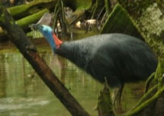
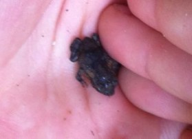
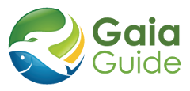
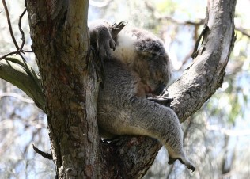

- species descriptions,
- photo galleries,
- footprints,
- tracks,
- scats,
- audio calls,
- maps,
- control techniques, and
- quick links to plenty of useful pest control resources.
Article
Turning those long walks along the beach into 'science'
By Ian McDonald
Article
Want to recieve the new & improved ALA 'blog email alerts' to your inbox?
The Atlas of Living of Australia team have updated the look and layout of our blog and news ‘Email Alerts.’ 
If you’d like to receive these alerts in your inbox and as they are posted, go to the My Alerts section on the homepage and enable the ‘blog and news’ tab, you may need to sign up to do this, if you haven’t already.
You can easily change the frequency of these alerts and have the option of disabling if you wish.
Just a reminder that you can also keep up to date with our news via our Twitter feed, RSS Feed or Communications section on our website.
Email info@ala.org.au if you have any further suggestions or questions about these alerts.
Thanks
The ALA communications team
Article
New version of 'OzAtlas' App available now for download on Android phones
 The Atlas of Living Australia team have just released a new and improved version of the OzAtlas mobile device App, available for download onto Android phones and tablets from today.
This application will allow users to retrieve lists of species recorded within an area, and to view details of the species such as recorded distribution, scientific name, common names and images all from the ease of your mobile phone. It also allows users to submit species occurrence records with an image to the Atlas of Living Australia, and to view the latest images added to the Atlas.
Some new improvements to this version include:
The Atlas of Living Australia team have just released a new and improved version of the OzAtlas mobile device App, available for download onto Android phones and tablets from today.
This application will allow users to retrieve lists of species recorded within an area, and to view details of the species such as recorded distribution, scientific name, common names and images all from the ease of your mobile phone. It also allows users to submit species occurrence records with an image to the Atlas of Living Australia, and to view the latest images added to the Atlas.
Some new improvements to this version include:
- Improved map tool with adjustable radius
- Breakdowns of species by more user friendly groups e.g. Parrots, Perching Birds, Beetles
- Improved record submission with extraction of EXIF information from supplied images
- Improved GPS handling
- Improved usability for the Android platform


Article
Atlas of Living Australia – making field guides accessible
The Atlas of Living Australia now has over 35 million records on Australian species freely and openly available through their website. What is not commonly known is that all the capabilities behind the delivery and visualisation of these records are also freely available via open “web services.” The Atlas encourages others to build new systems using these web services to further increase awareness of biodiversity in Australia.
Geoff Shuetrim has done exactly this and describes how a family trip to the Daintree Rainforest in 2010 led him to develop the Gaia Guide. Being often frustrated by the inability to recognise the amazing biodiversity within the environment, it became clear that for anything to be identified beyond the superstars of the plant and animal kingdoms, he was on his own.
While it was possible to identify something as a Cassowary, how could he be sure it was a “Southern” Cassowary when he was so far north? Not having a field bird guide handy, as it was left behind to lighten the weight, such questions were difficult to answer

A Southern Cassowary near Cow Bay, North Queensland (Source: Geoff Shuetrim)
He states how it took almost a week to learn that those cute little black frogs covering the ground in the morning were actually cane toads.

Young cane toad in the Daintree Rainforest, North Queensland (Source: Geoff Shuetrim)
In a place as rich and interesting as the Daintree Rainforest, he would have needed more field guides than he could ever carry to really appreciate what he and his family had travelled so far to see. There had to be a better way.
Today, just a little over two years later, a new field guide system is becoming one such way. The Gaia Guide is a functioning website that actively involves its users in all aspects of content creation. Its distinctive features are:
- It is freely available online without subscription;
- All data is available under a Creative Commons or similar license;
- Users are able to contribute to both species descriptions and observations;
- Data is easily exported via web services to mobile devices based on user location and/or field of interest; and
- The process of content creation actively leverages other web services such as those from the Atlas of Living Australia (Atlas).
It is this last point, about leveraging other web services, that needs emphasis. With the increasing use of smart phones, a new frontier for field guides is allowing the weighty backpack full of guides to be replaced by a single slim device. While slightly less obvious it can still be frustrating for users if you have a device with 10 or more different guides on it, each specialising in a different group of species or part of the world.
Users need to be able to easily select the appropriate data to take with them, depending on their interests and their location. When exploring the Daintree, I don’t want crocodile identification to be slowed down by the inclusion of data about Komodo Dragons. When I am bird watching, I don’t want search results for species with blue in their plumage to return a list of matching species that also includes the Ulysses butterfly and a bewildering array of parrotfish.
Meeting these user requirements is challenging. The first obstacle involves creating enough content that the appropriate data is available in the first place. The second involves enabling the user to easily filter that large body of data to only take with them descriptions that are relevant to their explorations. Without such filtering, users are easily confused by irrelevant options when making identifications. Also, inappropriate demands are placed on the storage and processing capabilities of their devices if too much data pre-downloaded.
These challenges would be extremely difficult to address without the assistance of web services like those provided by Atlas.
Development of the Gaia Guide
- 
- www.gaiaguide.info
Species descriptions in the Gaia Guide are created through a web interface that allows direct editing of all aspects of a description, including:
- images,
- sound recordings,
- distribution maps,
- analysis of species colouration,
- diet,
- size,
- conservation status, and
- links to related websites.
On the Gaia Guide, these species descriptions are organised into hierarchies, known as field guides. Many of these field guides are naturally organised according to taxonomic groupings. For example, there is a taxonomic hierarchy of all birds encountered in or around Australia. Similarly there is a taxonomic hierarchy of all species found in and around the town of Yungaburra in Queensland. Like descriptions, these hierarchies can also be edited directly through the Gaia Guide web interface.
Manual editing can quickly become an overwhelming burden. The bird guide includes in excess of 800 species, while the Yungaburra guide currently includes 905 animals, 1,389 plants and 95 fungi.
This is where features from the Atlas website can help. Atlas web services have allowed the Gaia Guide to quickly get answers to key questions like:
- What species are found within a particular region of Australia?
- What species, within a given taxonomic ranking, are found within that region?
- What is the full taxonomic classification of any given species?
- What common names and synonyms are used to refer to a given species?
With the answers to these questions, Gaia Guide has been able to fully automate the creation of any field guide hierarchy for Australia that is based on a taxonomic organisation.
For example, to produce a guide to the biodiversity in the Tarkine wilderness, simply select the region of interest on a Google map, nominate which taxonomic group (birds, insects, reptiles etc.) is of interest, and set the server to work. Within minutes an email is returned, indicating that the new guide is ready for review.
The new guide has been constructed based upon careful analysis of Atlas’s taxonomic information, scientific names and synonyms to ensure maximum re-use of existing species descriptions in the Gaia Guide.
All species in the new guide that have already been documented are ready to use immediately. For new species, the Atlas provides a stub description, including the scientific name, a common name (if there is one), and the Life Science Identifier that uniquely identifies the species within the Atlas.
The services offered by Atlas do not stop there. The first step in fleshing out a stub description is to include a distribution map. Fortunately an up-to-date map can be included from Atlas at a single click that triggers a call to the appropriate Atlas web service. The listing for the mapping services is here: http://biocache.ala.org.au/ws. See “Mapping Services”.
Next, up, the description needs some images. Again the Atlas web services can supply a list of images associated with the species. The listing for these services is here: http://bie.ala.org.au/ws. See the “Get Image” service under “Species”. GBIF also have a web service listing/tutorial here: http://www.gbif.org/developer/summary.
To my knowledge there is an overarching catalogue of web services from the GBIF nodes. To produce this would require visiting the separate GBIF node sites which vary considerably in offerings.
While not all of the images meet Gaia Guide’s licensing criteria a good number do and Atlas enables the user to select appropriate images from a menu of possibilities, tapping into resources like Encyclopedia Of Life, Wikipedia, Flickr and many more. Content editors still need to verify ownership, licensing and image labelling but at least image discovery has been done for them.
With the basics in place, content editors can introduce a range of additional details, again querying against web services. Gaia Guide allows real-time validation of scientific names using information exposed by the World Register of Marine Species and the Integrated Taxonomic System.
Confident of the scientific classification and armed with a reasonable idea of how the species looks and where it is found, content editors need to fill in the details. Again, Gaia Guide provides assistance by automating the process of searching for related web pages including FishBase, Encyclopedia Of Life, Australian Reptiles Online Database, and Wikipedia, all of which are handy stepping off points for the learning process.
Augmenting distribution maps by collecting observations
Given an adequate species description, users can begin the process of recording their own observations through the Gaia Guide. Instead of being limited to just those observations recorded directly in Gaia Guide, users are again assisted by the Atlas. In a single operation, content editors can trigger the download of all observations for a species from Atlas or just those observations for one or more species for a region of interest. This provides immediate context for the observations being recorded through the Gaia Guide.
Longer term, as observation data accumulates, Gaia Guide will offer a range of services showing both seasonal and trend variations in species distribution, directly producing its own suggestions about where and when to go looking for a species of interest. Until sufficient data is available, however, it is a lot easier to pass the job of distribution analysis back to Atlas.
The Gaia Guide will also supply data to the Atlas through our own open web services. We expose observation data in a format complying with the International “Darwin Core” standard as used by the Atlas such that the Atlas can automatically harvest new and updated observations on a weekly basis. Again this is trivially easy, as explained on an earlier Atlas blog entry.
Once uploaded to the Atlas, the Gaia Guide observations are validated and augmented with a range of additional information. The results of this validation and augmentation process are directly accessible on the Atlas page devoted to data sourced from the Gaia Guide. Validated observations are incorporated into the distribution maps prepared by the Atlas, ready for updating back in the Gaia Guide system. How convenient and cost effective is that? Gaia Guide gets to benefit immediately from the Atlas’s investment in data quality. Gaia Guide also avoids the costs of implementing its own accuracy assessment systems for uploaded observations.
Assisted data selection
Looking to the future, the Atlas will also help the Gaia Guide to address the second major challenge facing users: the selection of just that data relevant to their next field-trip.
Using the same technology that drives creation of field guides today, Gaia Guide will enable users to intuitively harness the web services of the Atlas to choose just those subsets of the Gaia Guide that are directly relevant to their planned activities. Users will nominate a region, target groups of species, and a set of Gaia Guide field guides. The Atlas will identify the set of relevant species and package up their descriptions, their supporting multimedia resources, and the relevant branches of the hierarchical field guides. The data packages, once defined, can be downloaded directly onto users’ mobile devices.
This data selection process is talked about as a future offering only because Gaia Guide is still undergoing load testing and access to computationally heavy activities are being carefully controlled for members of the public.
Going mobile
In the meantime, Gaia Guide has begun to roll out simpler mobile field guides on the Android platform. These come in three flavours: the traditional plain vanilla guide; the regional speciality guide; and the design-your-own guide.
The plain vanilla guide is based upon a single field guide hierarchy in Gaia Guide. The most complete such guide is for Australian birds. While, in some areas, the data still falls short of that available in commercial guides, the quality and range of species descriptions and supporting images is impressive and largely attributable to the foundation provided by the Atlas. Considering that the data content in the mobile application has been collated by a few individuals in their spare time over a period of weeks, it is a remarkably useful resource already.
The regional-speciality field guide is typified by the guide to Lady Elliot Island, a beautiful coral cay on the southern tip of Australia’s Great Barrier Reef. Drawing on species descriptions prepared on sister sites run by the Lizard Island Research Station and The Sydney Institute of Marine Science, and using the Atlas to identify local species, Gaia Guide produced a mobile application covering many of the species on Lady Elliot Island in a matter of days. Packaging up the content for that guide was trivial. While the guide remains incomplete, it is already more useful than alternative guides to the island’s fauna and flora.
The region-specific application also makes it simple to influence Atlas’s set of locally occurring species. As local observations accumulate through the Lady Elliot Island field guide, they feed back to the Atlas, making Atlas species selections increasingly informative.
The third flavour of field guide enables users to customise the information they take with them. Known as Gaia Guide Mobile, it enables users to nominate branches of the field guides that they want to use offline. While online, they can then trigger the download of data, totally tailoring the species identification support that they receive in the field.
Looking to the future
Gaia Guide still has a long way to go until it fully supports our family trips into Australia’s wild places but the project has developed surprisingly quickly in its two years, largely because Australia has had the foresight to fund and resource a publicly accessible centralised biodiversity database. Without the ability to rapidly query for the existence of species by location, Gaia Guide would still be largely populated by the relatively small amounts of information sourced from collaborating scientific institutions.
The impact of the Atlas of Living Australia is probably best assessed by comparing Gaia Guide data for Australia to Gaia Guide data for other countries. Australian data is plentiful. Data for much of the rest of the world remains considerably more difficult to access. Hopefully the creation of services like Gaia Guide, on top of resources like the Atlas of Living Australia will motivate other countries to make similar investments in making their own environmental heritage accessible to both the scientific community and the broader community.
Article
Call for nominations for the 2013 Ebbe Nielsen Prize

The Ebbe Nielsen Prize is an annual prize established by the GBIF Governing Board to honour the memory of Ebbe Schmidt Nielsen, who was an inspirational leader in the fields of biosystematics and biodiversity informatics and one of the driving leaders promoting the establishment of GBIF.
The prize is awarded annually to a promising researcher, usually in the early stages of his/her career, who is combining biosystematics and biodiversity informatics research in an exciting and novel way.
Nominations are submitted by GBIF Participants to the GBIF Science Committee, which selects the recipient. The prize is awarded at the GBIF Governing Board meeting and consists of 30,000 Euros, to be used by the recipient to further his/her research.
If you are interested in applying for this prize, please make note of the following conditions:
• Contact the GBIF Australia Head of Delegation (john.lasalle@csiro.au) as soon as possible to indicate your interest.
• Applications may only be submitted by the Head of Delegation on the applicant’s behalf.
• A maximum of two (2) applicants from each region are permitted.
• The deadline for nominations is the 15th February, 2013.
Please click on this link for more information on the Ebbe Nielsen Prize.
Article
ABRS adds significantly to species names information
A three year Atlas of Living Australia funded contract with the Australian Biological Resources Study has resulted in Australian researchers adding 29,864 species names to the Australian Faunal Directory and the Australian Plant Name Index. The contract was part of the Australian National Species Lists project.
The Australian Biological Resources Study (ABRS) component of the National Species Lists (NSL) project set out to update the Australian Faunal Directory (AFD) and to integrate names information for algae and lichens into the Australian Plant Name Index (APNI).
The names data sets are a critical part of biodiversity informatics infrastructure. For the Atlas of Living Australia, the lists provide the framework for integrating data. Dr John La Salle, Director of the Atlas has said “the species names delivered through this project are absolutely essential for the Atlas system itself and the overall study of biodiversity in Australia.”
Lepas pectinata (barnacle) attached to Janthina janthina (snail), Photo: Clay Bryce, Western Australian Museum
The names datasets include information on current name, synonymy, authority, place and date of publication and protologue.
Fauna:
- 28,305 accepted species names were added to AFD via the new editing interface.
- An additional 32,250 modifications and updates were made to species names.
- The AFD now holds 112,504 accepted species records (close to 90% of the accepted, described species of fauna inAustralia).
Algae:
- The freshwater and marine algae datasets are being combined in the APNI data structure
- There was an increase of 1,295 accepted algae species, with this project delivering 7,309 accepted species of algae to the APNI data structure.
Lichens:
- The lichen dataset was up-to-date prior to the project commencement.
- Following recent additions the dataset has increased to 3,528 accepted species.
ABRS managed 46 contracts for delivery of NSL names information over the three years of the project, with 44 of these for delivery of species information to the AFD. Some 104 external specialists contributed to the ABRS component of the NSL project. They were responsible for updating and compiling taxonomic and nomenclatural information about fauna and algae. The project formally concluded in September 2012, however, additions to the databases are still occurring with compilers still adding data to the AFD.
Article
Celebrate the history of ecology and biodiversity on the NSW South Coast

Want to gain a unique insight into the ecology and biodiversity from over forty years of research? Join the Atlas of Life in the Coastal Wilderness for their first science forum celebrating the history of ecological research in their region. Hear from 12 prominent researchers and ecologists (detailed below) who will share what they have discovered about this special region and tell us what eventuated from their results.
Attendees will have the chance to join discussions about the value of this research spanning significant time and can talk about where to go from here with this foundation of knowledge, new emerging technologies and enthusiastic community contributors.
This is a special, never to be repeated opportunity to listen to the wealth of knowledge of these legendary scientists, so do come and join us for fun and enlightenment.
Where: Auswide Skills Centre,Cabarita Place, Merimbula (Behind the Lakeview Hotel)
When: Thursday 13th and Friday 14th of December (Note Saturday 15th December - 0ptional field visits being organised - keep posted to website for more information)
Cost: $30 for 2 day forum: including lunch and breaks, Plus $55 if you wish to attend the forum celebration dinner
Speakers include:
Prof. Harry F Recher: Emeritus Professor, FRZS, AM Senior Fellow, Ornithology, The Australian Museum, Sydney, NSW.
Dr James Shields: Previously with the Australian Museum and ForestsNSW, Lecturer Maquarie University, currently “Rent a Ruminant,” Local Environment Solutions and “Conservation Canines.”,
Dr Rod Kavanagh: Previously Principal Research Scientist, ForestsNSW
Steve Mackay: Formerly with Australian Water Technologies, now an independent consultant
Doug Binns: Flora Ecologist, Forests NSW
Dan Lunney: Principal Research Scientist Dept. Environment & Climate Change
Dr Peter Fullagar: Previously Principal Research Scientist CSIRO, now an independent consultant
Mike Crowley Msc: Previously Science Teacher Moruya High School, Regional Ecologist ForestsNSW, now an independent consultant
Dr Laurie Olive: Previously Lecturer in Geography Defense Force Academy
Dr Pat Hutchings: Principal Senior Research Scientist - Australian Museum
Dr Alan Millar: Principal Research Scientist - Royal Botanic Gardens - Sydney
Prof. Joe Baker AO OBE FTSE MSc PhD DSc FRACI C.Chem: Inaugural Patron of AMSA (Australian Marine Science Association), founder of AIMS (Australian Institute of Marine Science) previously Chief Scientist for Queensland.
Doug Reckord: Principal, Bournda Environmental Education Centre
Enquiries and Registration
Email: libby.alanhepburn@bigpond.com
Phone: (02) 6495 0917
Visit: www.alcw.org.au
Article
Koalas, stand up and be counted….by smart phones
CSIRO Blog posted by Lucy Mercer-Mapstone

Doing what koalas do best (Courtesy CSIRO)
At coffee with a friend recently we chatted about our latest smartphone app discovery while tweeting about the conversation, and sharing the link via Facebook. It occurred to me that I do a lot more with my phone these days than makes calls and send texts. Thanks to these nifty little tools we can identify and purchase the song playing in the café, edit the photo we just took, find out exactly what time our bus will arrive, and practically anything else in between.
With worldwide smartphone sales estimated to reach 686 million by the end of 2012, it seems that many people are embracing the new technology. As the technological capability progresses so too does the functionality and variety of apps that they support. And science is getting on board.
A smartphone app released this week is turning citizens into scientists. Citizen science is becoming an increasingly popular phenomenon and with the technology so easily accessible, why not? All you need is a smartphone, a keen eye, and a case of the curiosities.

Count those little furry bears with our nifty app
The app has been developed by CSIRO and the Atlas of Living Australia to support South Australia’s Great Koala Count, which will take place on Wednesday, 28th November. The day will see South Australians don their citizen science hats and go forth to collect a count of Australia’s most loveable marsupial – the koala. The project will utilise the manpower of society and smartphone technology to help scientists understand a bit more about our favourite Australian mascot.
Research scientist, Dr Andrew Baker, has been involved in developing the app and believes that it is a really exciting new way of doing science. “To ensure reliable results and accurate conclusions, we need a sufficient amount of data for our research,” he said.
“The more data we have, the more reliable our results. But scientists, of course, can’t be everywhere at once. By using apps like this, we can get around this problem as it means that we’ve got lots of people on the ground taking verifiable observations at lots of locations in a short period of time.”
And the app makes taking these observations a breeze. Snap a photo, record your observations, the phone’s inbuilt GPS records your specific location and, hey presto, you’ve got your first data point. The team even made a video to demonstrate the app in action, check out the video link - How to use smart phone app.
The applications for this technology and software development are endless, and the practicality of using phones as portable data recorders points to a strong future in this field. They remove the need to transfer recordings from notebooks to computers, which is time-consuming and increases the risk of error. They provide verifiable data through photos and GPS recordings. And perhaps best of all, they allow everyone from kindergarten kids to retired professors of ecology to get involved in scientific research about the natural world around us.
If you’d like to get involved head to www.abc.net.au/adelaide/operation/
The Great Koala Count is a joint initiative of the Barbara Hardy Institute of the University of South Australia, ABC Local Radio SA, the SA Department of Environment, Water and Natural Resources, the Adelaide and Mt Lofty Ranges Natural Resources Management Board, CSIRO and the Atlas of Living Australia.